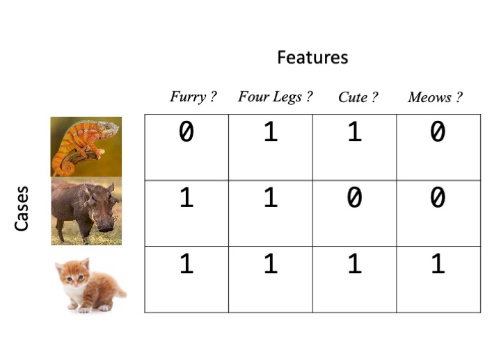
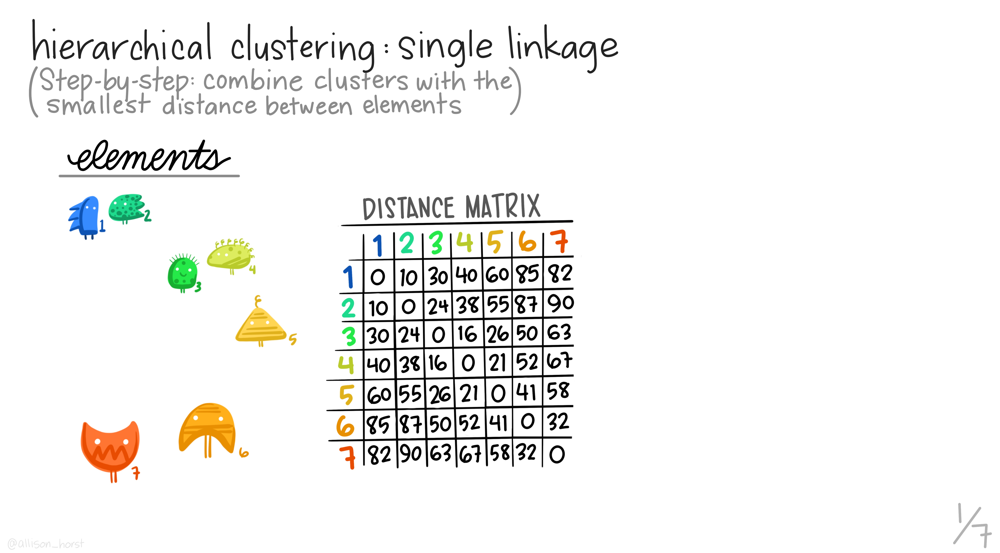
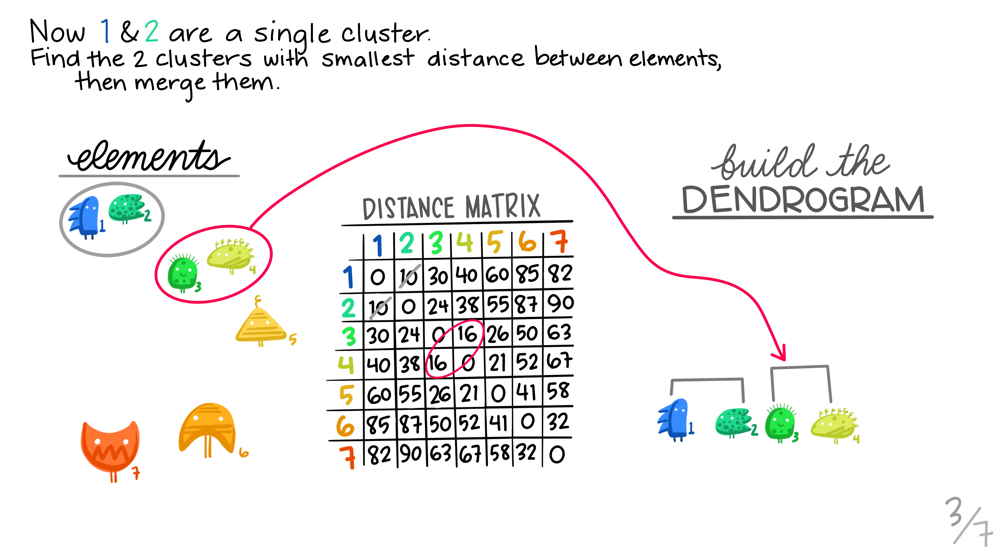
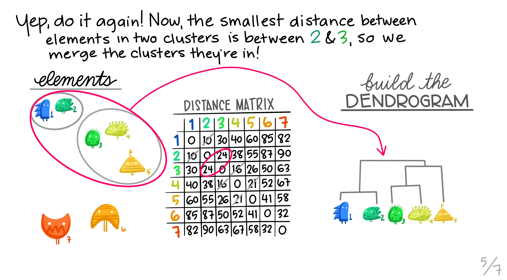
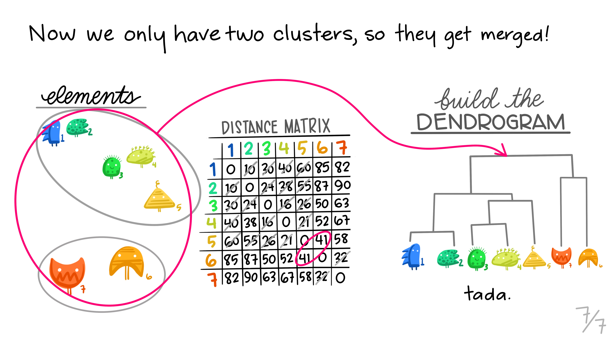
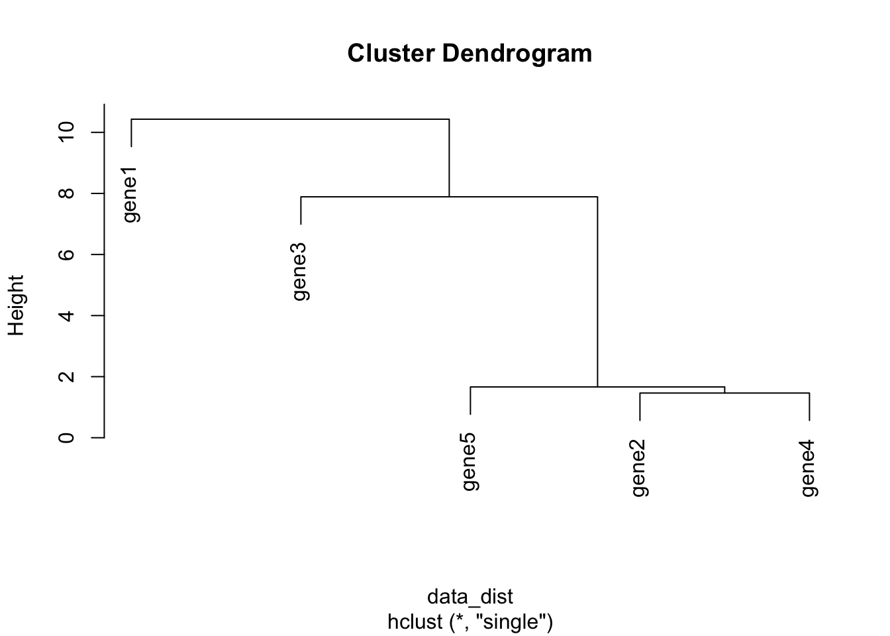
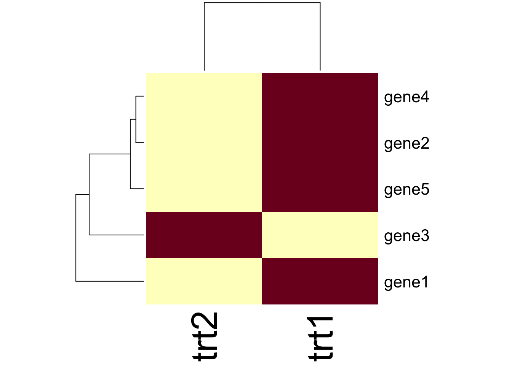
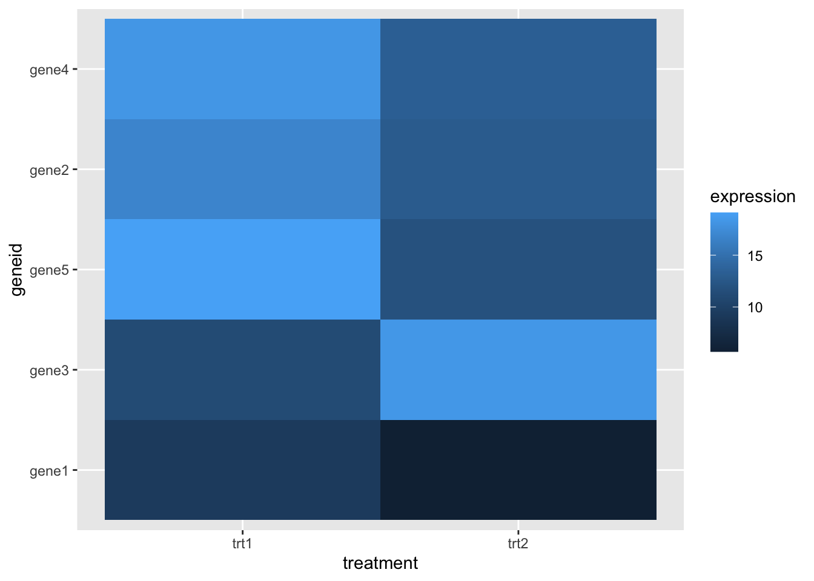
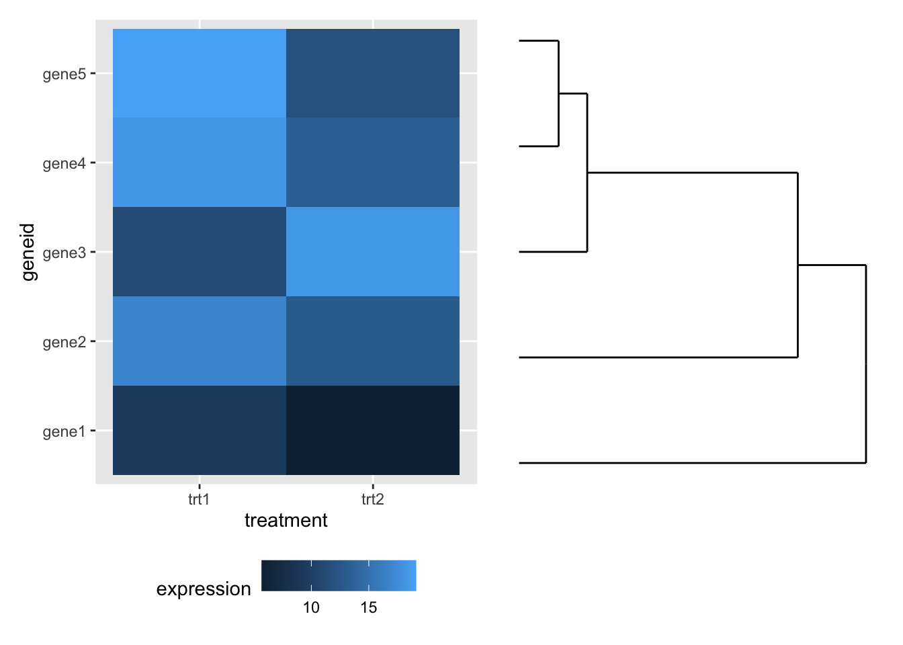

1 Unsupervised Learning
1.1 About this chapter
- Questions
- How can I find groups of similar things in data?
- Objectives
- Understand features and cases
- Understand hierarchical and k-means clustering
- Keypoints
- Unsupervised learning is finding groups in a data set without known examples
- The number of cases we have should be greater than the number of features each case has
In this chapter we’ll take a look at unsupervised learning tools. This is a great place to start with ML as a biologist because, whether you know it or not, you’re actually already familiar with a good number of the principles in this field. Unsupervised learning is a form of data-driven ML. In these approaches we start off with a mish-mash of things that we have information about but we don’t know what any of them are. Are aim is to try and group the similar things together, and the different things apart.
1.2 \(p\) Features and \(n\) Cases
When we talk about information that we know about things, we really mean the things we noted in the experiment. This ‘information’ can be diverse things including but not limited to a biological sequence, a set of physical measurements, some category values, or gene expression values. There are different types of ML tool for dealing with them all. In a very general sense, what ML tools work with is an \(n \times p\) matrix of \(n\) cases and \(p\) features, the features \(p\) are the things we change and the cases \(n\) are the different items or individuals we measured the features on, here’s a basic example in which the presence of a feature is indicated by a 1 and it’s absence by 0.
Here’s a gene expression based example, gene counts from an RNAseq experiment. The treatments are \(p\), the different genes are the \(n\)s
| geneid | trt1 | trt2 |
|---|---|---|
| gene1 | 9.313663 | 5.683347 |
| gene2 | 16.824577 | 12.921582 |
| gene3 | 11.134654 | 18.386286 |
| gene4 | 18.245261 | 13.271525 |
| gene5 | 19.107009 | 11.849221 |
Finally, here’s a sequence based example
| id | seq |
|---|---|
| gene1 | TESVI |
| gene2 | NESCI |
| gene3 | TESNI |
| gene4 | LEDVT |
| gene5 | ANDVI |
In general ML tools need this to be true
\(n >> p\)
\(n\) must be much greater than \(p\). We must have many more cases than features we measured. Most ML tools will fail, or at least have reduced power when this isn’t true. This can be a limiting factor in our ability to use ML. Conversely, the power will generally go up when it is true and very large data sets can give extraordinary ML power.
1.3 Clustering
The first class of ML tools we will look it is unsupervised clustering, this will be familiar to many biologists from heatmaps of gene expression data, but also more fundamentally from phylogenetic tree analysis. We’ll look at a general overview before we look at some specific tools.
1.3.1 The distance measure and matrix
The first step of clustering is to get a measure of ‘distance’ between all the pairs of cases \(n\)s that we have gathered. In this case when we say ‘distance’, we mean a numeric measure of how similar or dissimilar our cases are. There are lots of different metrics of distance, e.g the correlation coefficient \(r\) is a measure of how similar two sets of numbers are. With this measure the higher the value, the more similar the cases are. Different types of data will need different distance metrics. For sequence based data we typically have the substitution or edit distance (the number of changes needed to make the two sequences identical).
The distance measure is a crucial step in clustering, but all tools have a sensible default and we don’t need to worry about what it is exactly at this stage beyond what we’ve discussed, but we do need to see what we do with the pairs of distances to understand the basics of the algorithm. Once we have the distances we form a distance matrix, which is always square, symmetrical across the diagonal and looks like this:
gene1 gene2 gene3 gene4 gene5
gene1 0.00 1.00 0.87 1.00 0.96
gene2 1.00 0.00 0.77 1.00 0.99
gene3 0.87 0.77 0.00 0.97 1.00
gene4 1.00 1.00 0.97 0.00 0.99
gene5 0.96 0.99 1.00 0.99 0.00As we can see, the further apart the genes expression across the treatments the greater the distance measure. Once we have this matrix the clustering can begin.
1.4 Hierarchical (single linkage) Clustering
Hierarchical clustering is the most common and straightforward clustering algorithm. The elements (cases or \(n\)s) are formed into the distance matrix and the aim is to group the pair of elements with the smallest distance into one, then repeat, continuing until we run out of elements. We then move onto grouping the pairs and so on until there’s nothing left to group. Allison Horst demonstrates it better than I, so here’s the excellent illustrations she made that run through the process.







Hopefully this montage has clarified the overall process of grouping elements based on distance metrics calculated between all pairs. The question remains though, how can we do this in R?
1.4.1 Hierarchical clustering in Base R
There is an hclust() function built into R we can use. Being part of the base distribution and not using any packages means that this function is a bit general and needs data in particular format. Specifically it needs a numbers only matrix or data frame of information - you’d need to remove all text information from the object - getting this in to shape is left as an exercise for the reader. You would end up with a matrix object looking something like this
data_mat trt1 trt2
gene1 9.313663 5.683347
gene2 16.824577 12.921582
gene3 11.134654 18.386286
gene4 18.245261 13.271525
gene5 19.107009 11.849221You can the get clusters by creating the dist object with the dist function and the clusters with hclust() using the method single to apply the single linkage clustering we learned above. Then we can directly plot the dendrogram.
data_dist <- dist(data_mat, diag=TRUE)
clusters <- hclust(data_dist, method="single")
plot(clusters)
Note that the distance measure by default is euclidean which is a different way of computing distances than the \(r\) correlation coefficient we discussed earlier. euclidean is more commonly used, but it’s beyond the scope of this course to discuss distance measures in detail. More information on distance measures is freely available on Wikipedia.
1.4.2 Clustered Heatmaps
Typically you’ll want to make some sort of heatmap and have a tree or dendrogram of the clusters stuck on the side, rather than just have a cluster tree on its own. Again, base R has a helpful if general function, heatmap(), simply pass the matrix object e.g data_mat and it can do the rest.
heatmap(data_mat)
The function has a lot of customisation options, which you can investigate using ?heatmap and Google!
1.4.3 Extra Credit: ggplot and clusters
Heatmaps can be drawn in ggplot using the geom_tile() geom. If our data are in ‘tidy’ format like this
tidy_gdf# A tibble: 10 × 3
geneid treatment expression
<chr> <chr> <dbl>
1 gene1 trt1 9.31
2 gene1 trt2 5.68
3 gene2 trt1 16.8
4 gene2 trt2 12.9
5 gene3 trt1 11.1
6 gene3 trt2 18.4
7 gene4 trt1 18.2
8 gene4 trt2 13.3
9 gene5 trt1 19.1
10 gene5 trt2 11.8 We can make a heatmap quite simply, like this
library(ggplot2)
hmap <- ggplot(tidy_gdf) + aes(treatment, geneid) + geom_tile(aes(fill=expression))
hmapBut this has no dendrogram and is not clustered! It’s going to take a little fiddling to add this on - we can get the clusters out of the hclust() result and apply those. To do that we must solve another problem first - turning our tidy data into a matrix! That can be done with pivot_wider() from tidyr, which gets us most of the way there.
library(tidyr)
wide_gdf <- tidy_gdf %>% pivot_wider(
id_cols = "geneid",
names_from="treatment",
values_from="expression")
wide_gdf# A tibble: 5 × 3
geneid trt1 trt2
<chr> <dbl> <dbl>
1 gene1 9.31 5.68
2 gene2 16.8 12.9
3 gene3 11.1 18.4
4 gene4 18.2 13.3
5 gene5 19.1 11.8 And we can now remove the non-numeric columns and do the cluster
data_mat <- wide_gdf %>%
select(-geneid) %>%
as.matrix()
clusters <- hclust(dist(data_mat, diag=TRUE))We can reorder the axis in our ggplot heatmap using the order from the clusters object to put the geneids into the right order
clusters$order[1] 1 3 5 2 4hmap + scale_y_discrete(limits= wide_gdf$geneid[clusters$order] )
The ggdendro package allows us to create a dendrogram from a clustering
library(ggdendro)
dendro <- ggdendrogram(clusters) + coord_flip() + theme_dendro()
dendroWe can compose the two plots with patchwork (cheekily moving the legend out of the way first).
library(patchwork)
hmap + theme(legend.position="bottom") + dendro
1.5 K-Means clustering
A limitation of hierarchical clustering is that we as the operator have to guess what elements are in which cluster and that can be a bit arbitrary. An alternative algorithm, the K-means cluster gets around this problem by allowing us to specify the number of clusters up-front and works from there. It starts with the assumption that there are k clusters and makes k random cluster start points (centroids) then tries to assign cases (elements/observations) to one of each centroid based on the distance from the start points. The assignment to clusters is improved iteratively by starting again with the centroid at the mean point in each cluster and continues until no improvements are made. Again, Allison Horst has drawn some great guides


1.5.1 Figure of Merit
A limitation of this approach and of hierarchical clustering is that we may not know how many k clusters there are. The Figure of Merit (FOM) technique can help us work out the k that we need. Briefly, this works by trying a k-means clustering at 1, then 2, then 3 up to a stopping number of clusters and at the end of each clustering we check the distance variability between the centroids and the elements/cases/observations. The value of k that minimises the distance is the value that we want to use as most points are near to a cluster centroid.
Let’s walk through the process of doing FOM and then applying a k-means clustering.
Here’s a sample data set to try and cluster, we’re going to cluster the rows. Note how it resembles a gene expression matrix with the gene names as the matrix row names, not in the data itself.
head(gene_exprs, n=3) sample1 sample2 sample3
gn1 4.516471 3.722275 15.52375
gn2 1.451247 3.225752 15.21140
gn3 3.584614 3.020616 15.40538We’ll use the factoextra package to do the FOM and the subsequent k-means. First the FOM using fviz_nbclust()
library(factoextra)
fviz_nbclust(gene_exprs, kmeans, method="wss")The option method lets us specify which method we want to use to estimate the variability, here we use wss for within sum of squares, which is a reasonable one. The resulting plot shows that wss improves lots until we get to 3 clusters, at which point there is only minimal improvement. We interpret this as meaning that there are 3 clusters within our data. We can use that to make our k-means cluster. The kmeans() function does this easily and we can plot the result using the fviz_cluster() function.
km_clus <- kmeans(gene_exprs, 3, nstart=25, iter.max = 1000)
fviz_cluster(km_clus, data=gene_exprs)The plot shows clearly the elements of the data are clustered into 3 groups. The km_clus object contains information about the elements cluster membership if you wish to extract that for any reason.
Roundup
- Unsupervised learning algorithms group things based on distances computed between them.
- Hierarchical and k-means are two common and useful methods.